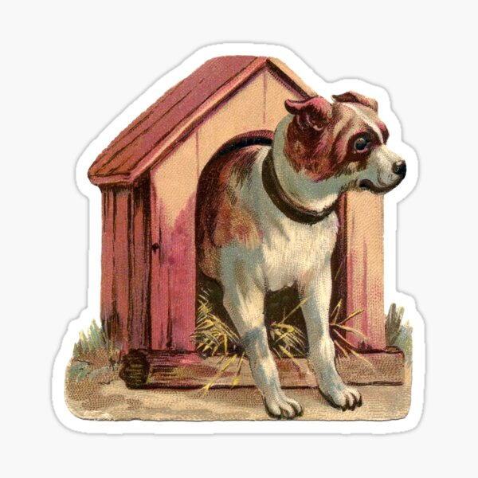

Le chien et le renard
Il était une fois un chien qui vivait dans une niche clôturé qui l'empêchait d’apercevoir l'extérieur mais lui laissait juste assez d'espace pour pouvoir se mouvoir, se nourrir et s'échapper. Il y habite depuis fort longtemps. Il y était né et n’y sortait jamais. Un jour, un renard qui avait vécu dans la forêt tomba par hasard sur sa niche. L'habitant de la niche interrogea le nouveau venu : - D'où viens-tu ? - Je viens de la forêt, répliqua l'autre. - La forêt ? Est-elle grande ? - Oh oui ! Elle est très grande ! dit le renard, - Serait-elle donc aussi grande que ma niche ? - Comment peux-tu comparer la forêt avec ta petite niche ? Oui, la forêt est immense et magnifique ! Tu voudrais que je te la montre ? - Non, tu mens ! Il ne peut rien exister de plus grand que ma niche. Sort d’ici ! s'écria le chien. Le renard prit ses jambes à son cou et sortit de la niche. Il reprit son voyage, en pensant à ce pauvre chien resté dans ce trou. Il avait pitié de lui : sa vision étriquée lui empêchait de vivre une vie plus heureuse et épanouie. * Il ne faut pas se fermer à l’extérieur et il est important de savoir remettre en question notre point de vue, même si cela est parfois désagréable.